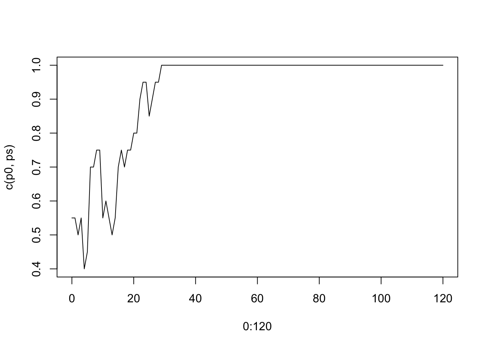
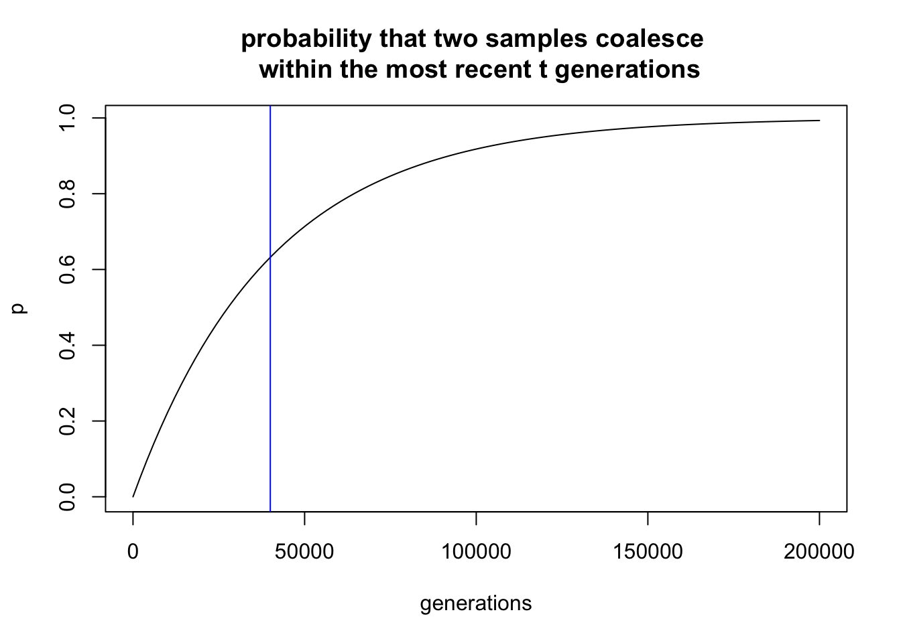
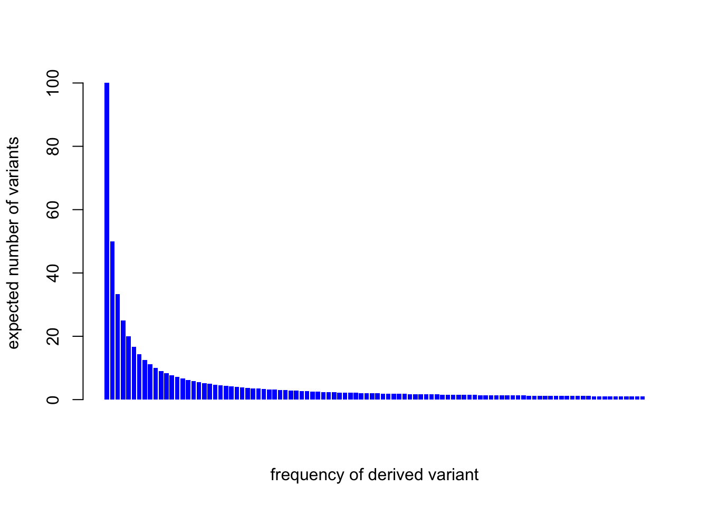
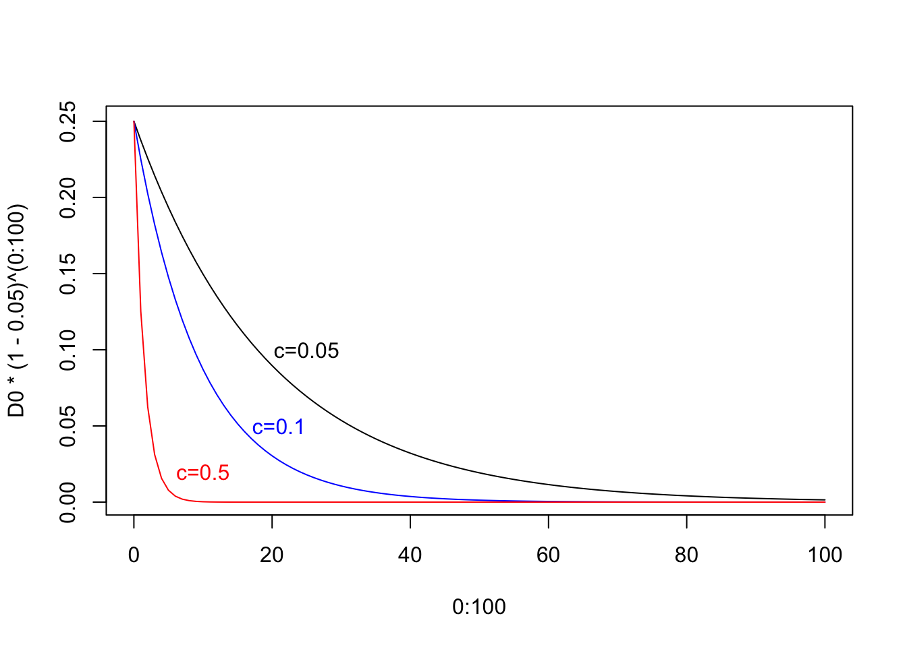
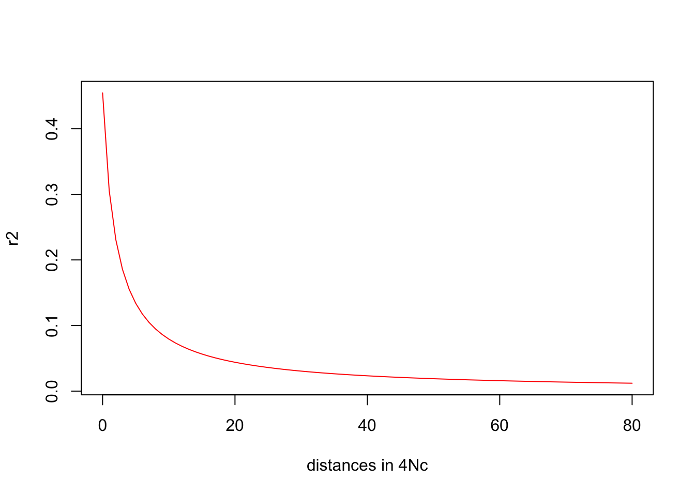

2 Part 2: Population genetics: the forces that shape genetic variation
key forces are:
- mutation
- drift
- recombination
- natural selection
2.1 2.1 Genetic Drift: What happens to alleles over time?
two copies of your genome differ 3 million SNPs
about 70 are new mutations from your parents (one generation)
most SNPs are inherited from very distant ancestors
genetic drift: the random changes in allele frequencies over time
neutral variation assumption
mutations can be lost, common, or fixed (fixation)
original allele/ancestral allele
new allele/derived allele
a new derived allele starts out with 1 copy, i.e. allele frequency of the derived allele is \(p=1/2N\), with N be the number of individuals and 2 due to diploid
Pitcairn island example: 50 inhabitants; 29 founders in 1790; the population never exceeded 250
2.1.1 The Wright-Fisher (WF) model of genetic drift
Assumption
a population with N individuals (2N alleles)
discrete generations
mate at random
constant population size (N for every generation)
ignoring on the sexes of parents
binomial distribution
binomial sampling
2N independent draws, the allele frequency is p in the previous generation and p1 in the next generation
- \(E(p1)=E(p)\)
- \(var(p1) = p(1-p)/2N\)
set.seed(2)
n=10
### the founder population
p0 = 0.55
x0 = c(rep(0,2*n*(1-p0)), rep(1, 2*n*p0))
### simulate the next generation
replicate_num = 1000
ps = c()
for(i in 1:replicate_num){
x = sample(x0,2*n,replace=T)
ps=c(ps, mean(x))
}
### plot the change of allele frequency
mean(ps); p0## [1] 0.5525## [1] 0.55var(ps); p0*(1-p0)/2/n## [1] 0.01184059## [1] 0.0123752.1.2 Binomial sampling over successive generations produces genetic drift
over the course of many generations
- the result of binomial sampling in one generation gives you the starting point for binomial sampling in the next generation
- Markov chain or random walk
set.seed(21)
n=10
### the founder population
p0 = 0.55
x0 = c(rep(0,2*n*(1-p0)), rep(1, 2*n*p0))
### simulate the next 120 generations
ps = c()
x = x0
for(i in 1:120){
x = sample(x,2*n,replace=T)
ps=c(ps, mean(x))
}
### plot the change of allele frequency
plot(0:120, c(p0, ps), type="l")
Eventually, the derived allele will either reach 100% frequency (fixed) or 0% (lost). 0 and 1 are referred to as absorbing states
2.1.3 mutation and drift
model the drift for a mutation (only one derived allele)
infinite sites assumption: each mutation creates a new allele that did not exist previously in the population
most alleles in a population are very rare: every new mutation starts out rare in the population (one copy), and most are quickly lost, while a very small fraction drift up to become common
the probability that a derived allele currently at frequency \(p\) will eventually fix is also \(p\).
2.1.4 mutation, drift and the amount of genetic variation
- expected heterozygosity
- in modern human populations, expected heterozygosity is ~0.5-1 heterozygous sites per kilobase
- a balance between two forces: mutation (input new variation) and drift (remove variation)
- it’s \(4N\mu\) with N being population size and \(\mu\) being the mutation rate
2.1.5 effective population size
- use effective population size (\(Ne\)) instead of N to reflect the actual rate of drift
- a few males have very many offspring can greatly reduce \(Ne\)
- \(Ne\) is usually much smaller than a census estimate of the population size
2.1.5.1 Estimating \(Ne\) from data
Based on the expected heterozygosity of 5e-4 to 1e-3 and the mutation rate of 1.3e-8 in humans, we can see the \(Ne \approx 20,000\) with 10,000 being the lower end of the range.
The low number of Ne 10,000 - 20,000 comparing the current world population of ~8 billion is because it’s a type of average overy the last million years and human population was far smaller for most of that time than it is now.
2.1.6 the WF model with haplotypes
haplotype: contain multiple variant sites
assume
- a genomic region of L basepairs
- mutations can arise anywhere in the sequence
- each haploid sequence in the next generation is drawn at random from the previous generation
2.1.7 WF simulation of haplotype variation
Forward simulation
set.seed(9)
n = 5; l=4; mu=0.01
G = matrix(0, nrow=2*n, ncol=l)
nucleotides = c(0, 1, 2, 3)
mutate = function(x){
return(sample(nucleotides[nucleotides!=x],1))
}
num_generation = 5
Glist = list(G=G)
for(igeneration in 1:num_generation){
for(irow in 1:(2*n)){
index_mutation = rbinom(l, 1, mu)
if(sum(index_mutation)!=0){
for(icol in which(index_mutation!=0)){
G[irow, icol] = mutate(G[irow,icol])
}
}
}
G = G[sample(1:(2*n), 2*n, replace=T),]
Glist[igeneration+1] = list(G=G)
}
Glist## $G
## [,1] [,2] [,3] [,4]
## [1,] 0 0 0 0
## [2,] 0 0 0 0
## [3,] 0 0 0 0
## [4,] 0 0 0 0
## [5,] 0 0 0 0
## [6,] 0 0 0 0
## [7,] 0 0 0 0
## [8,] 0 0 0 0
## [9,] 0 0 0 0
## [10,] 0 0 0 0
##
## [[2]]
## [,1] [,2] [,3] [,4]
## [1,] 0 1 0 0
## [2,] 0 0 0 0
## [3,] 0 0 0 0
## [4,] 0 1 0 0
## [5,] 0 0 0 0
## [6,] 0 0 0 0
## [7,] 0 0 0 0
## [8,] 0 0 0 0
## [9,] 0 0 0 0
## [10,] 0 0 0 0
##
## [[3]]
## [,1] [,2] [,3] [,4]
## [1,] 0 0 0 0
## [2,] 0 0 0 2
## [3,] 0 0 0 0
## [4,] 0 0 0 0
## [5,] 0 0 0 2
## [6,] 0 0 0 0
## [7,] 0 1 0 0
## [8,] 0 0 0 0
## [9,] 0 0 0 0
## [10,] 0 1 0 0
##
## [[4]]
## [,1] [,2] [,3] [,4]
## [1,] 0 0 0 0
## [2,] 0 1 0 0
## [3,] 0 1 0 0
## [4,] 0 0 0 0
## [5,] 0 0 0 0
## [6,] 0 0 0 0
## [7,] 0 0 0 2
## [8,] 0 0 0 0
## [9,] 0 0 0 0
## [10,] 0 0 0 0
##
## [[5]]
## [,1] [,2] [,3] [,4]
## [1,] 0 0 0 0
## [2,] 0 0 0 2
## [3,] 0 1 0 0
## [4,] 0 0 0 0
## [5,] 0 0 0 0
## [6,] 0 0 0 0
## [7,] 0 0 0 0
## [8,] 0 0 0 0
## [9,] 0 0 0 0
## [10,] 0 0 0 0
##
## [[6]]
## [,1] [,2] [,3] [,4]
## [1,] 0 0 0 0
## [2,] 0 0 0 0
## [3,] 0 1 0 0
## [4,] 0 1 0 0
## [5,] 0 0 0 0
## [6,] 0 0 0 0
## [7,] 0 0 0 0
## [8,] 0 0 0 0
## [9,] 0 0 0 0
## [10,] 0 0 0 02.2 2.2 More on genetic drift: The coalescent
2.2.1 A short history
- Wright-Fisher model during the 1920s
- Coalescent in 1982 and 1983: John Kingman, Richard Hudson, and Fumio Tajima
2.2.4 Time to coalescence
any two copies of a locus, each copy has a random parent from 2N chromosomes in the previous generation. So the probability that they descend from the same parent is \(1/2N\), and the probability that they descend from different parent is \(1-1/2N\).
The probability that they descend from different parent after going back t generations:
\[(1-\frac{1}{2N})^t\] as \(1-1/2N < 1\), the \((1-1/2N)^t\) approaches zero with t increasing. This means that if we go far enough back in time we can guarantee that any pair of copies of this locus have a common ancestor.
2.2.5 Understanding waiting-time distributions: the geometric distribution
Image a 20-sided die, how many times do I need to roll the die until it lands with the ‘20’ face up?
If we get a ‘20’ on t+1 roll, then we don’t have ‘20’ in the previous t rolls and get ‘20’ on the t+1 roll. So the probability is
\[p*(1-p)^t\]
, where p is 1/20 in this case
This function describes the waiting times for events and it is called geometric distribution
The probability of rolling a 20 within the first t rolls:
\[1-(1-p)^t\]
The average waiting time to the first success is 1/p
2.2.6 Understanding waiting-time distributions: the exponential distribution
approximate the geometric with a continuous distribution called the exponential distribution. They are virtually equivalent
Example: “how long will it be until the next earthquake on the Stanford campus?” And let \(\lambda\) be the rate of earthquakes per day.
The probability that the next earthquake will occur exactly t days from now is (probability density function (PDF))
\[\lambda e^{-\lambda t}\]
and the total probability of having an earthquake any time within the next t days is (cumulative distribution function (CDF))
\[1-e^{-\lambda t}\]
2.2.7 The time distribution for two samples
For two copies of a locus, there is a probability 1/2N that the two copies will coalesce each generation. We model it by exponential distribution with \(\lambda = 1/2N\)
n=20000;lambda=1/2/n
ts = seq(0,200000,length=100)
plot(ts, 1-exp(-lambda*ts), type="l", ylab="p", main="probability that two samples coalesce \n within the most recent t generations", xlab="generations")
abline(v=2*n, col="blue")
So, there is a 50% chance that coalescence occurs within the last 1.4N = 28,000 generations. It’s almost certain that coalescence occurs within 10N = 200,000 generations.
These timescales are really lone in terms of human evolution. Assume 25 years for one generation, 2N generations is 1 million years
2.2.8 The coalescent for larger samples
extend from a pair of alleles to \(m\) alleles (m/2 individuals)
For m copies back in time, pick two of these lineages random to coalesce into a common ancestor, so there will be m-1 copies. This process repeats until we get down to 2, and then finally to one common ancestor.
Use \(T_k\) to be the number of generations when there are \(k\) lineages on the tree. So \(T_2\) has an exponeital distribution. The expected value of \(T_k\) is
\[E(T_k) = \frac{4N}{k(k-1)}=2N*\frac{2}{k(k-1)}\]
, as for k lineages, there are \(k(k-1)/2\) possible pairs to get a possible coalescent.
So when k=10, the average waiting time for a coalescent is 45-fold shorter, 2N/45 generations.
In other words, the most recent coalescent events - when there are many lineages - occur within a few generations, while the oldest coalescent events can easily take a million years.
How long age was the MRCA of a sample (or even of the entire population)?
\[T_{MRCA(m)}=T_2+T_3+T_4+...+T_{m-1}+T_{m}\]
\[E[T_{MRCA(m)}]=\sum_{k=2}^{m}\frac{4N}{k(k-1)}\]
As the sample size gets large,
\[\lim\limits_{m \to \infty } E[T_{MRCA(m)}] = 4N\]
So the common ancestor for the entire population is 4N generations ago (~2 million years, for humans). on average, half of the total time back to the common ancestor is spent waiting for the last two lineages to coalesce.
The genealogy has both random topology (i.e., branching patterns) and random times. both the topology and coalescent times are random draws from the coalescent process.
2.2.9 Coalescent with mutation
Assume a stretch of L base pairs (L = 5kb, for example) in m samples (without recombination) , \(\mu\) is the mutation rate per base pair per generation. \(b_i\) is the length of branche i on the tree.
Let \(n_i\) be the number of mutations on branch \(i\). The expected number of mutations \(n_i\) is
\[E[n_i]=\mu b_i L\]
, modeled by the Poisson distribution.
2.2.10 Quantitative aspects of variation in the coalescent
Question: how many sequence differences can I expect between two samples, in a region of L basepairs?
Recall, the coalescent time for two samples,
\[T_2 \sim exponential(\lambda=1/2N); E(T_2)=2N\]
The mutation rate on both branch on L baseparis is \(2\mu L\) per generation
So the total number of differences between the two modern-day samples
\[E(T_2) \times 2\mu L=4N\mu L\]
It’s convenient to divide this by L, which gives us the expected number of differences per base pair. That is equivalent to heterozygosity per site, H, which has been computed based on WF forward model.
2.2.10.1 most heterozygous SNPs are very old
Mentioned before that there are about 3 million heterozygous SNPs for two copies of your genome.
Mentioned before the average time to the common ancestor of two homologous copies is 2N generations (~1 million years=\(25*2*20,000\)). A mutation, on average, occurs halfway, which is 500,000 years ago.
Modern humans evolved in sub-Saharan Africa. About 70,000 years ago, some populations started spreading out of Africa into the Middle East.
2.2.10.2 The number of SNPs found in a sample
expand from a sample of 2 to a sample of \(m\)
Suppose that a region of \(L\) basepairs in \(m\) samples, the total branch length (i.e., the sum of all the branch lengths) is
\[\sum_{k=2}^m k \times E(T_k)=\sum_{k=2}^m k \times \frac{4N}{k(k-1)}=\sum_{k=2}^m \frac{4N}{k-1}\]
So, the expected number of variable sites (i.e., SNPs) is
\[\sum_{k=2}^m \frac{4N}{k-1} \times \mu \times L=4N\mu L\sum_{k=2}^m \frac{1}{k-1}=4N\mu L\sum_{k=1}^m \frac{1}{k}\]
One key point is that as the sample size grows the MRCA time converges to 4N, while the number of segregating sites grows indefinitely at a rate proportional to the log of the sample size, \(ln(m)\).
2.2.10.3 the site frequency spectrum (SFS)
Let \(s_i\) be the number of SNPs at which the drived allel is present exactly \(i\) times. For example, \(s_1\) gives us the number of singletons, \(s_2\) the number of doubletons, and so on.
The total number of SNPs, S, is
\[S=\sum_{i=1}^{m-1} s_i\]
The vector of allele frequencies \(s_1, s_2,s_3,...\) is referred to as the site frequency spectrum (SFS). Distortion away from SFS can be used to detect some types of natural selection, as well as other depatures from the basic model such as recent population growth.
The expected number of variants with a derived allele frequency \(i\) is proportional to \(1/i\):
\[E[s_i]=\frac{1}{i}\times 4N\mu L\]
m=100; fNmuL=100
barplot(1/(1:m)*fNmuL, col="blue", border=NA,
xlab="frequency of derived variant",
ylab="expected number of variants")
For m=100, 55% of the variants are below 10% frequency. And for m=10,000, 76% of variants are at <10% frequency.
One key thing is that most variants are rare. A useful rule of thumb is that allele frequencies are uniform on a log scale.
The WF model gives a different conceptual tool to reach a similar conclusion: every new mutation starts out rare and most are lost quickly, while only a few are lucky enough to drift up to become common.
2.2.11 The coalescent with population size changes
The model above, simplest possible population model: constant size and no population structure; vanilla coalescent
Two types of changing population size: bottlenecks and population growth
2.2.11.1 Population bottlenecks
A bottleneck refers to a reduction in population size. Bottlenecks greatly increase the rate of genetic drift.
Bottlenecks during the spread of populations as they left Africa and colonized the globe during the past ~80k years. This is why non-African populations have less genetic variation than Africans.
The ancestors of modern Jews went through a tight population bottleneck ~1000 years ago.
The rate of coalescence is k(k-1)/4N per generation. When N decreases, the rate will increase. This means the few lineages that predate the bottleneck are likely to have many descendants.
2.2.11.2 Population growth
human populations: ~1 million in 10,000 BCE to ~8 billion today
A very large population size slows down the rate of coalescence at very recent times, and increased the number of very rare variants.
In a model, the population grew instantaneously to infinite size, 100 generations ago. So there would be no coalescence in these 100 generations and greatly extending the terminal branches.
The longer terminal branches produce many more singleton mutations: \(4N \times \mu L\) in vanilla model, but \((4N+100m) \times \mu L\).
A more realistic model is continuous exponential growth.
2.2.11.3 Footprints of population history in real data
Tennessen et al. (2012), exome sequencing for 1,100 African-American, and 1,300 European-American.
The authors observed a much higher fraction of rare vriants compared to the null, a direct evidence for rapid recent population growth. Then fit a model of historical population sizes (often called a demographic model) that can fit the full SFS data.
2.2.13 Coalescent simulation of haplotype variation
###Goncalo Abecasis's code: https://csg.sph.umich.edu/abecasis/class/2003/Practical1.html
set.seed(10)
m=5; N=1000; mu=0.001; L=1000
lengths = rep(0,m)
parentnodes = rep(0,m)
childnodes = list()
descendants <- rep(1, m)
activenodes = 1:m
nextNode = m+1
for(k in m:2){
# sample "time to coalescent" from a exponential distribution
# with a mean of 4N/k(k-1)
t = rexp(1, rate=k*(k-1)/4/N)
# all current nodes increase in length by time t
lengths[activenodes] = lengths[activenodes]+t
# sample two nodes to coalesce
coalescence = sample(activenodes, 2)
cat("After ", t, " generations: Nodes ", coalescence[1], " and ", coalescence[2], " coalesce\n")
parentnodes[coalescence]=nextNode
childnodes[[nextNode]]=coalescence
activenodes = c(activenodes[!(activenodes %in% coalescence)], nextNode)
parentnodes[nextNode] = 0
lengths[nextNode] = 0
descendants[nextNode] <- descendants[coalescence[1]] + descendants[coalescence[2]]
nextNode = nextNode+1
}## After 2.991281 generations: Nodes 1 and 2 coalesce
## After 128.7347 generations: Nodes 6 and 5 coalesce
## After 527.5128 generations: Nodes 4 and 3 coalesce
## After 2173.346 generations: Nodes 7 and 8 coalescelengths## [1] 2.991281 2.991281 659.238850 659.238850 131.726002 128.734721
## [7] 2700.858854 2173.346006 0.000000parentnodes## [1] 6 6 8 8 7 7 9 9 0activenodes## [1] 9descendants## [1] 1 1 1 1 1 2 3 2 5childnodes## [[1]]
## NULL
##
## [[2]]
## NULL
##
## [[3]]
## NULL
##
## [[4]]
## NULL
##
## [[5]]
## NULL
##
## [[6]]
## [1] 1 2
##
## [[7]]
## [1] 6 5
##
## [[8]]
## [1] 4 3
##
## [[9]]
## [1] 7 8spectrum <- rep(0, m)
for (i in 1:length(descendants)){
spectrum[descendants[i]] <- spectrum[descendants[i]]+lengths[i]
}
spectrum## [1] 1456.186 2302.081 2700.859 0.000 0.000s = sapply(lengths, function(x) rpois(1, x*mu*L))
pos = sapply(s, function(x) as.integer(runif(x, min=0, max=L)))
mutation = s
mutation## [1] 2 3 617 684 135 124 2752 2207 0for(i in length(mutation):(m+1)){
mutation[childnodes[[i]]] = mutation[childnodes[[i]]]+mutation[i]
print(mutation)
}## [1] 2 3 617 684 135 124 2752 2207 0
## [1] 2 3 2824 2891 135 124 2752 2207 0
## [1] 2 3 2824 2891 2887 2876 2752 2207 0
## [1] 2878 2879 2824 2891 2887 2876 2752 2207 0mutation[1:m]## [1] 2878 2879 2824 2891 28872.3 2.3 Linkage, recombination, and LD
Linkage disequilibrium (LD); recombination breaks down LD by shuffling genotypes
2.3.1 A first look at haplotype structure
First time, Marty Kreitman, 1983, sequenced the ADH gene in 11 lines of the fly Drosophila melanogaster
Haplotype; particular combinations of alleles at different SNPs frequenctly appear together
2.3.2 Linkage generates haplotype structure (or equivalently, LD)
Linkage: sites that are close together in the genome are usually inherited together
Completely linked: no recombination
Relationship between the branching structure of the tree and the corresponding haplotypes:
- mutations occurred on the same branch always appear together
- mutations occurred on the adjacent branches usually appear together
Without recombination, there are very strong constraints on the possible configurations of the derived alleles across haplotypes.
Perfect phylogeny: haplotypes that are consistent with a single tree
2.3.3 Recombination
2.3.3.1 A quick refresher on recombination
Druing meiosis (减数分裂), the maternal and paternal chromosomes are broken and then joined back together so that chromosomes in the resulting gametes are mixtures of the parental chromosomes, called recombination, or crossover.
More-or-less randomly across the genome; averagely 26 per sperm and 42 per egg.
2.3.3.2 Genetic distance
Measures the rate of crossover, between different positions along a chromosome; centiMorgans (cM)
Genetic distance x, between two points on a chromsome to be x cM if the average number of crossovers between those two points is x/100 per meiosis, or the x% probability of a crossover per meiosis in that interval.
Recombination rate: in cM/Mb: 100 times the expected number of crossovers per megabase.
The average recombination rate in the human is about 1.2 cM per MB. In other words, there is about a 1.2% probability of a crossover event per megabase.
Recombination generates new combinations of alleles that would not be possible with complete linkage.
For SNPs that are close together (less than ~0.01-0.1cM or 10-100Kb), linkage is a stronger force than recombination and there tends to be strong haplotype structure. At larger distances (more than 0.1cM), recombination is highly effective at shuffling genotypes, and LD is generally week.
2.3.4 Measuring LD between pairs of SNPs
Imagine two SNPs: one with A and a alleles, and the other with B and b alleles. There are four possible haplotypes: AB, Ab, aB, and ab.
The mesasure D is denfied by
\[D = p_{AB}-p_A p_B\]
, where \(p_{AB}\) is the frequency of haplotype AB, and \(p_A\) and \(p_B\) is the frequncy of allele A at the first SNP and the frequency of allele B at the second SNP. As the sign depends on the labeling of the allels, so people use \(|D|\)
D can be interpreted as the statistical covariance between alleles at the two SNPs if alleles are labeled 0 and 1.
If genotypes at the two SNPs are independent, D = 0.
The second measure of LD is known as \(D'\)
\[D'=\frac{D'}{D_{max}}\]
, where \(D_{max}=min(p_A p_b, p_a p_B)\) when \(D>0\), and \(D_{max}=min(p_A p_B, p_a p_b)\) when \(D<0\)
The third measure of LD is called \(r^2\)
\[r^2=\frac{D^2}{p_A p_a p_B p_b}\]
, which ranges from 0 and 1. \(r^2=1\) means a perfect LD and there are just two of the four possible haplotypes: i.e., only AB/ab or Ab/aB
2.3.5 Strong recombination breaks down LD
Consider only recombination, but no drift. If the c is the proability of crossover per generation between two SNPs. After one generation,
\[D_1=(1-c)D_0\]
, where \(D_1\) is the LD D measurement in the next generation and \(D_0\) is in previous generation.
So After t generations,
\[D_t=(1-c)^tD_0\]
We can see unless the recombination rate is very small, LD decays very quickly.
D0=0.25
plot(0:100, D0*(1-0.05)^(0:100), type="l"); text(25,0.1,"c=0.05")
lines(0:100,D0*(1-0.1)^(0:100), type="l", col="blue"); text(21,0.05,"c=0.1", col="blue")
lines(0:100,D0*(1-0.5)^(0:100), type="l", col="red"); text(10,0.02,"c=0.5", col="red")
To summarize,
- if there is no recombination, the basic properties of the coalescent genealogy tell us to expect strong LD;
- at large distances (for SNPs more than a few cMs apart), recombination rapidly eliminates LD
- at intermediate distance scales (say ~1-100 kb), recombination and coalescence comppete against each other.
2.3.6 The coalescent with recombination: the ARG
Incorporate recombination into the coalescent prodcues a more complex structure called an ancestral recombination graph (ARG)
Image two positions in a sequence. Coalescence joins lineages, but now recombination can split sequences apart so that each side of a breakpoint becomes a separate lineage.
Considering more samples and more recombination events, the full ARG contains a series of so-called “marginal trees” at different positions across the sequence.
2.3.6.2 The tug-of-war (拔河) between coalescence and recombination
The tree-structure of the coalescent creates haplotype structure, while recombination tends to break it apart.
The outcome of this competition is determined by a compound parameter, \(4Nc\): the ratio of the rate of recombination (c) to the rate of coalescence (1/2N).
2.3.6.3 Timescales in the ARG
For two samples and a region of length c. The rate of coalescence is 1/2N per generation and recombination occurs at a rate c per generation (in either lineage), so 2c in total. So the probability of at least one recombination before coalescence is
\[\frac{2c}{2c+1/2N}=\frac{4Nc}{4Nc+1}\] Expand from two samples to k lineages. Coalescence decreases the number of lineages from k to k-1; this occurs at a rate of \(k(k-1)/4N\) per generation. Recombination increases the number of linesages from k to k+1; this occurs at a rate of ck, where c is the total recombination rate across the segment of interest.
So the probability that next event is a recombination event is
\[\frac{kc}{kc+k(k-1)/4N}=\frac{4Nc}{4Nc+k-1}\]
- 4Nc is the natural parameter to describe the role of recombination in an ARG
- in large samples, coalescence predominates at recent timescales (when k is large), while recombination is more effective at scrambling the lineages further back in time (when k is small)
To summarize,
- sites that are close together tend to share the same genealogy, hence SNPs are in high LD
- genealogies become less and less correlated with increasing genetic distance, thus reducing LD
- the scale of LD depends on the product of N and c (usually wrtten as 4Nc)
- in latge samples, the most recen coalescent events occur faster than recombination, so closely related haplotypes can be shared over large recombination distances, even at distances where overall LD is low.
2.3.6.4 Decay of \(r^2\) with distance
Within a short distance, the expected \(r^2\) decays as a function of distance:
d = 0:80
plot(d, (10+d)/(22+13*d+d^2), type="l", col="red", xlab="distances in 4Nc", ylab="r2")
on average 100kb in humans is around 4Nc=80; this model predicts that LD should decay to be low within around 10-100kb.
2.3.7 Recombination and LD in human data
1990s; Human Genome project;
STRs in families (low-resolution: ~2 per Mb)
- recombination rates vary from about 1-3 cM/Mb (except for the centromere), the higher near the telomeres
- Female rates are generally higher than male rates; 1.6-fold
high-resolution SNP data
- LD structure forms blocks of high LD (so called haplotype blocks)
- heatmap with color indicating \(|D'|\) pr \(r^2\)
- The blocky structure of the D’ matrices suggests that most recombination is taking place at the boundary points between adjacent blocks
Use LD structure to estimate a fine-scale recombination
recombination hotspots: ~30,000 identified, additional weaker hotspots
LD is lowest in African populations due to their larger long-term effective population size
2.3.8 PRDM9 and the hotspot paradox
2005 paper by Simon Myers and collegues: 7-nucleotide sequence motif
hotspot paradox: first pointed out by Rosie Redfield and colleagues in a 1997 PNAS paper
Meiosis,
- homologous chromosomes pair up; = crossovers initiated by one of the two homologous
- double-strand break for initiating chromosome and part of the chromosome is chewed back in both directions around the break
- the damaged region is repaired using the other chromosome as a template as gene coversion
For two chromsomes, one with the hotspot motif and the other without, it will ends with two chromsomes without motifs. Biased gene conversion. A form of selction to remove hotspots.
Hotspot paradox argues that over time, all hotspots will be eliminated
comparing LD in humans and chimpanzees
- differing at only ~1.4% of sites
- no meaningful overlap of hotspot locations between humans and chimps
European-American population: not everyone uses the same hotspots at the same rates
papers in 2010
- PRDM9 with a “zinc finger” domain that is responsible for DNA binding
- PRDM9 binds to the DNA and recruits additional machinery to initiate double-strand breaks
- zinc finger DNA-binding domain is encoded within a minisatellite (or VNTRs) repeat section of the gene
- highly variable due to misparing during DNA replication
- PRDM9 has dozens of alleles found in humans
- different alleles have differnt DNA binding preferences
- Chimpanzees also have completely different PRDM9 alleles from humans
- most rapidly evolving vertebrate genes
2.3.9 Haplotype copying models
Landmark 2003 paper, Na Li and Matthew Stephens; haplotype copying model (Li and Stephens, or product of approximate conditionals model)
conditional sampling probability for the “next” haplotype in a sample
- within a sample region of DNA sequence, the next haplotype “copy” one already seen, but not be identical due to mutations
- over a larger region, the enxt haplotype with switch due to recombination
- the rate of both switches and mutations should decrease with the sample size of reference panel
2.3.9.1 The conditional sampling probability for haplotype copying
Assume \(K\) haplotypes observed and genotype data at \(S\) SNPs, for the next haplotype from the fist variant poisition s=1 to the last s=S:
- determining the allele value: the proability of the allele in the new haplotype is equal the allele at site s in haplotype k is \(1-[\theta/(K+\theta)]\), where \(\theta\) reflects the rate of mutations or mismatches
- recombination: move from SNP s to s+1, the proability we introduce a recombination event is \(1-e^{-4Nc_s/K}\), wjere \(c_s\) is the expected number of crossovers between these two SNPs per generation
- increment SNP position. Set s to s+1 (Markov process)
Hidden Markov Models (HMMs)
2.4 Genetic drift in structured populations
nonrandom mating is referred to as population structure
between continents and geographic regions, nearby ethnic groups, towns or villages.
2.4.2 Allele freqeuncy variation across populations
alleles and haplotypes to drift independently in different populations. Lead to differences in allele and haplotype frequencies.
- alleles that are common in one population tend to be common everywhere
- alleles that are rare are usually restricted to a single population or continent